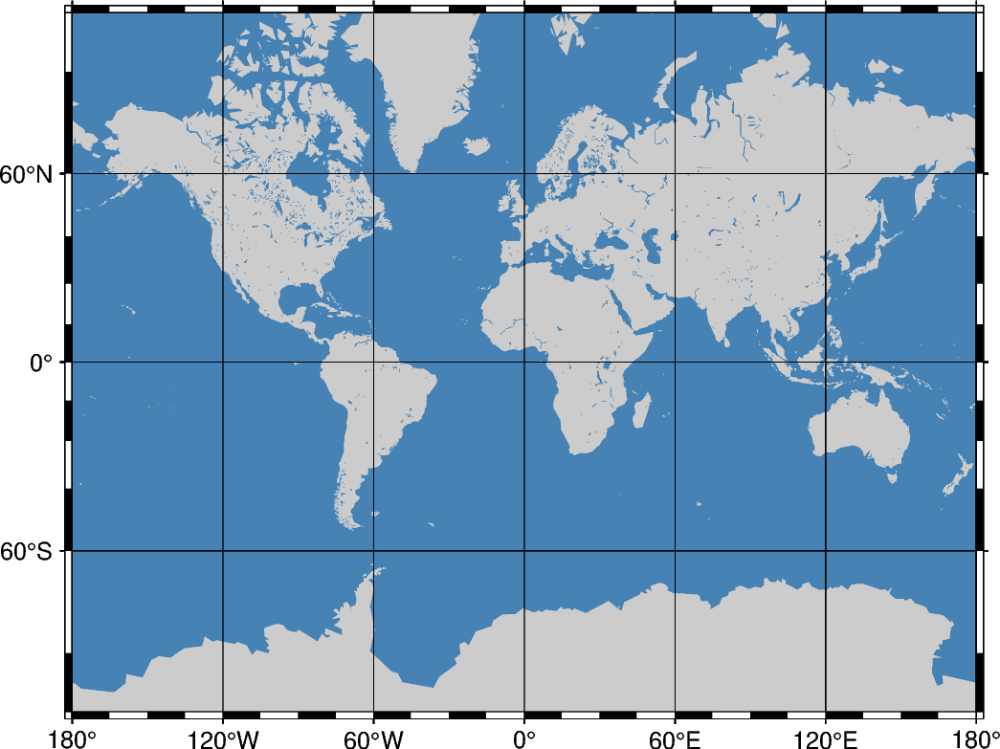

Note
Go to the end to download the full example code.
Mercator projection
The Mercator projection takes its name from the Flemish cartographer Gheert Cremer, better known as Gerardus Mercator, who presented it in 1569. The projection is a cylindrical and conformal, with no distortion along the equator. A major navigational feature of the projection is that a line of constant azimuth is straight. Such a line is called a rhumb line or loxodrome. Thus, to sail from one point to another one only had to connect the points with a straight line, determine the azimuth of the line, and keep this constant course for the entire voyage. The Mercator projection has been used extensively for world maps in which the distortion towards the polar regions grows rather large.
m[lon0/[lat0/]]scale or M[lon0/[lat0/]]width
The projection is set with m or M. The central meridian is set with the optional lon0 and the standard parallel is set with the optional lat0. The figure size is set with scale or width.
import pygmt
fig = pygmt.Figure()
fig.coast(
region=[0, 360, -80, 80],
projection="M0/0/12c",
frame="afg",
land="gray80",
water="steelblue",
)
fig.show()
Total running time of the script: (0 minutes 0.213 seconds)